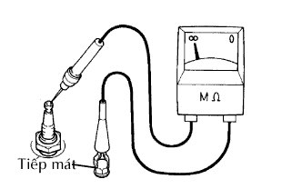
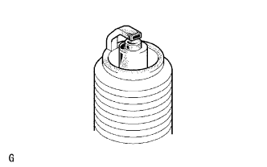
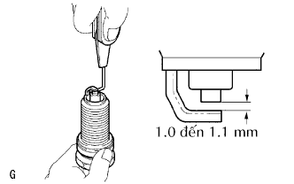
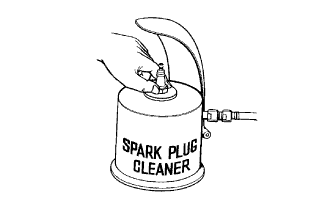

HỆ THỐNG ĐÁNH LỬA > KIỂM TRA TRÊN XE |
| 1. TIẾN HÀNH THỬ ĐÁNH LỬA |
Kiểm tra các mã DTC.
Kiểm tra xem có đánh lửa không.
Tháo cuộn dây đánh lửa.
Tháo bugi.
Lắp bugi vào cuộn dây đánh lửa và nối giắc của cuộn đánh lửa.
Ngắt 4 giắc nối của vòi phun.
Tiếp mát cho bugi.
Kiểm tra bằng cách quan sát rằng tia lửa phát ra khi động cơ quay khởi động.
Quy trình thử đánh lửa.
Kiểm tra rằng giắc nối phía dây điện của cuộn đánh lửa có IC đánh lửa đã được cắm chắc chắn.
| Kết quả | Đi đến |
| NG | Lắp chắc chắn |
| OK | Đi đến bước tiếp theo |
Tiến hành thử đánh lửa cho mỗi cuộn đánh lửa có IC đánh lửa.
| Kết quả | Đi đến |
| OK | Thay thế cuộn đánh lửa có IC đánh lửa |
| NG | Đi đến bước tiếp theo |
Kiểm tra sự cấp nguồn đến cuộn đánh lửa có IC đánh lửa.
| Kết quả | Đi đến |
| NG | Kiểm tra dây điện giữa khoá điện và cuộn dây đánh lửa có IC đánh lửa. |
| OK | Đi đến bước tiếp theo |
Đo điện trở giữa của cảm biến vị trí trục cam.
| Nhiệt độ | Điều kiện tiêu chuẩn |
| Lạnh | 835 đến 1,400 Ω |
| Nóng | 1,060 đến 1,645 Ω |
| Kết quả | Đi đến |
| NG | Thay thế cảm biến vị trí trục cam |
| OK | Đi đến bước tiếp theo |
Đo điện trở giữa của cảm biến vị trí trục khuỷu.
| Nhiệt độ | Điều kiện tiêu chuẩn |
| Lạnh | 1,630 đến 2,740 Ω |
| Nóng | 2,065 đến 3,225 Ω |
| Kết quả | Đi đến |
| NG | Thay thế cảm biến vị trí trục khuỷu |
| OK | Đi đến bước tiếp theo |
Kiểm tra tín hiệu IGT từ ECM.
| Kết quả | Đi đến |
| NG | Kiểm tra ECM |
| OK | Sửa dây điện giữa cuộn đánh lửa và ECM |
Dùng đầu khẩu 16 mm, lắp bugi.
Lắp cuộn dây đánh lửa.
| 2. KIỂM TRA BUGI |
|  |
Kiểm tra điện cực.
Dùng Ômkế Mega, đo điện trở cách điện.
|  |
Phương pháp kiểm tra xen kẽ:
Tăng ga nhanh để đạt tốc độ động cơ 4,000 vòng/phút trong 5 lần.
Tháo bugi.
Kiểm tra bằng cách quan sát bugi.
Nếu điện cực khô, bugi hoạt động đúng chức năng. Nếu điện cực bị ướt, hãy đi đến bước tiếp theo.
Kiểm tra hư hỏng ở phần ren và phần cách điện của bugi.
Nếu có hư hỏng, hãy thay thế bugi. Nếu không bị hư hỏng, thì lắp lại bugi.
| Nhà sản xuất | Sản phẩm |
| DENSO | K20HR-U11 |
|  |
Kiểm tra khe hở điện cực của bugi.
|  |
Làm sạch các bugi.
Nếu điện cực bị bám muội các bon ướt, hãy làm sạch bugi bằng máy làm sạch sau đó làm khô nó.